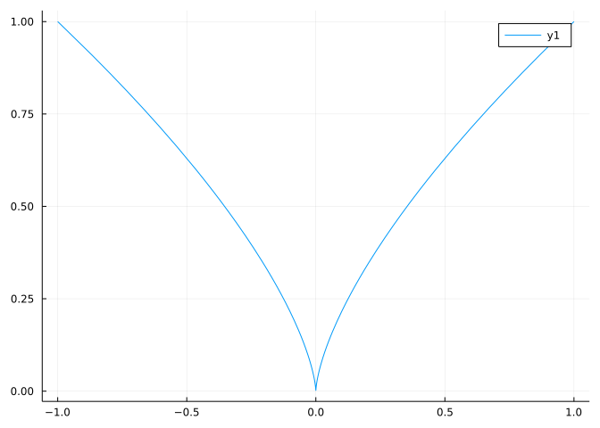
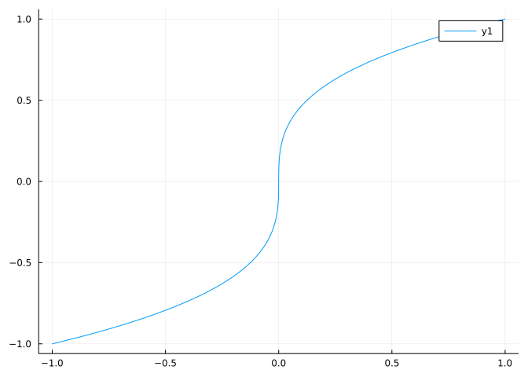
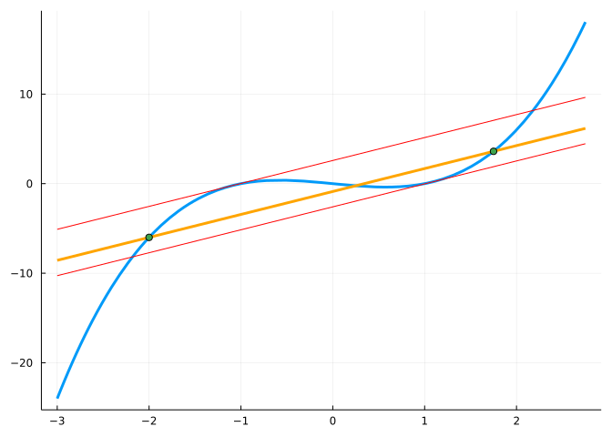
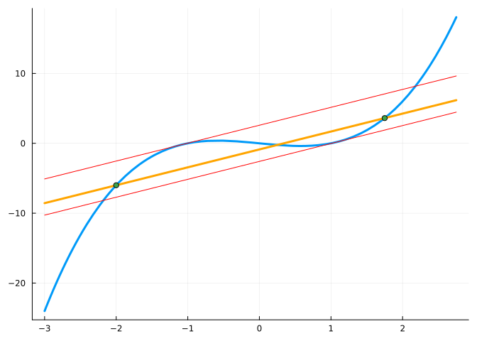

f(x) = abs(x)
plot(f, -1,1)25 The mean value theorem for differentiable functions.
This section uses these add-on packages:
using CalculusWithJulia
using Plots
using RootsA function is continuous at \(c\) if \(f(c+h) - f(c) \rightarrow 0\) as \(h\) goes to \(0\). We can write that as \(f(c+h) - f(x) = \epsilon_h\), with \(\epsilon_h\) denoting a function going to \(0\) as \(h \rightarrow 0\). With this notion, differentiability could be written as \(f(c+h) - f(c) - f'(c)h = \epsilon_h \cdot h\). This is clearly a more demanding requirement that mere continuity at \(c\).
We defined a function to be continuous on an interval \(I=(a,b)\) if it was continuous at each point \(c\) in \(I\). Similarly, we define a function to be differentiable on the interval \(I\) it it is differentiable at each point \(c\) in \(I\).
This section looks at properties of differentiable functions. As there is a more stringent definition, perhaps more properties are a consequence of the definition.
25.1 Differentiable is more restrictive than continuous.
Let \(f\) be a differentiable function on \(I=(a,b)\). We see that \(f(c+h) - f(c) = f'(c)h + \epsilon_h\cdot h = h(f'(c) + \epsilon_h)\). The right hand side will clearly go to \(0\) as \(h\rightarrow 0\), so \(f\) will be continuous. In short:
A differentiable function on \(I=(a,b)\) is continuous on \(I\).
Is it possible that all continuous functions are differentiable?
The fact that the derivative is related to the tangent line’s slope might give an indication that this won’t be the case - we just need a function which is continuous but has a point with no tangent line. The usual suspect is \(f(x) = \lvert x\rvert\) at \(0\).
We can see formally that the secant line expression will not have a limit when \(c=0\) (the left limit is \(-1\), the right limit \(1\)). But more insight is gained by looking a the shape of the graph. At the origin, the graph always is vee-shaped. There is no linear function that approximates this function well. The function is just not smooth enough, as it has a kink.
There are other functions that have kinks. These are often associated with powers. For example, at \(x=0\) this function will not have a derivative:
f(x) = (x^2)^(1/3)
plot(f, -1, 1)
Other functions have tangent lines that become vertical. The natural slope would be \(\infty\), but this isn’t a limiting answer (except in the extended sense we don’t apply to the definition of derivatives). A candidate for this case is the cube root function:
plot(cbrt, -1, 1)
The derivative at \(0\) would need to be \(+\infty\) to match the graph. This is implied by the formula for the derivative from the power rule: \(f'(x) = 1/3 \cdot x^{-2/3}\), which has a vertical asymptote at \(x=0\).
Note
The cbrt function is used above, instead of f(x) = x^(1/3), as the latter is not defined for negative x. Though it can be for the exact power 1/3, it can’t be for an exact power like 1/2. This means the value of the argument is important in determining the type of the output - and not just the type of the argument. Having type-stable functions is part of the magic to making Julia run fast, so x^c is not defined for negative x and most floating point exponents.
Lest you think that continuous functions always have derivatives except perhaps at exceptional points, this isn’t the case. The functions used to model the stock market are continuous but have no points where they are differentiable.
25.2 Derivatives and maxima.
We have defined an absolute maximum of \(f(x)\) over an interval to be a value \(f(c)\) for a point \(c\) in the interval that is as large as any other value in the interval. Just specifying a function and an interval does not guarantee an absolute maximum, but specifying a continuous function and a closed interval does, by the extreme value theorem.
A relative maximum: We say \(f(x)\) has a relative maximum at \(c\) if there exists some interval \(I=(a,b)\) with \(a < c < b\) for which \(f(c)\) is an absolute maximum for \(f\) and \(I\).
The difference is a bit subtle, for an absolute maximum the interval must also be specified, for a relative maximum there just needs to exist some interval, possibly really small, though it must be bigger than a point.
Note
A hiker can appreciate the difference. A relative maximum would be the crest of any hill, but an absolute maximum would be the summit.
What does this have to do with derivatives?
Fermat, perhaps with insight from Kepler, was interested in maxima of polynomial functions. As a warm up, he considered a line segment \(AC\) and a point \(E\) with the task of choosing \(E\) so that \((E-A) \times (C-A)\) being a maximum. We might recognize this as finding the maximum of \(f(x) = (x-A)\cdot(C-x)\) for some \(A < C\). Geometrically, we know this to be at the midpoint, as the equation is a parabola, but Fermat was interested in an algebraic solution that led to more generality.
He takes \(b=AC\) and \(a=AE\). Then the product is \(a \cdot (b-a) = ab - a^2\). He then perturbs this writing \(AE=a+e\), then this new product is \((a+e) \cdot (b - a - e)\). Equating the two, and canceling like terms gives \(be = 2ae + e^2\). He cancels the \(e\) and basically comments that this must be true for all \(e\) even as \(e\) goes to \(0\), so \(b = 2a\) and the value is at the midpoint.
In a more modern approach, this would be the same as looking at this expression:
\[ \frac{f(x+e) - f(x)}{e} = 0. \]
Working on the left hand side, for non-zero \(e\) we can cancel the common \(e\) terms, and then let \(e\) become \(0\). This becomes a problem in solving \(f'(x)=0\). Fermat could compute the derivative for any polynomial by taking a limit, a task we would do now by the power rule and the sum and difference of function rules.
This insight holds for other types of functions:
If \(f(c)\) is a relative maximum then either \(f'(c) = 0\) or the derivative at \(c\) does not exist.
When the derivative exists, this says the tangent line is flat. (If it had a slope, then the the function would increase by moving left or right, as appropriate, a point we pursue later.)
For a continuous function \(f(x)\), call a point \(c\) in the domain of \(f\) where either \(f'(c)=0\) or the derivative does not exist a critical point.
We can combine Bolzano’s extreme value theorem with Fermat’s insight to get the following:
A continuous function on \([a,b]\) has an absolute maximum that occurs at a critical point \(c\), \(a < c < b\), or an endpoint, \(a\) or \(b\).
A similar statement holds for an absolute minimum. This gives a restricted set of places to look for absolute maximum and minimum values - all the critical points and the endpoints.
It is also the case that all relative extrema occur at a critical point, however not all critical points correspond to relative extrema. We will see derivative tests that help characterize when that occurs.

32 from L’Hopitals calculus book (the first) showing that at a relative minimum, the tangent line is parallel to the \(x\)-axis. This of course is true when the tangent line is well defined by Fermat’s observation.25.2.1 Numeric derivatives
The ForwardDiff package provides a means to numerically compute derivatives without approximations at a point. In CalculusWithJulia this is extended to find derivatives of functions and the ' notation is overloaded for function objects. Hence these two give nearly identical answers, the difference being only the type of number used:
f(x) = 3x^3 - 2x
fp(x) = 9x^2 - 2
f'(3), fp(3)(79.0, 79)Example
For the function \(f(x) = x^2 \cdot e^{-x}\) find the absolute maximum over the interval \([0, 5]\).
We have that \(f(x)\) is continuous on the closed interval of the question, and in fact differentiable on \((0,5)\), so any critical point will be a zero of the derivative. We can check for these with:
f(x) = x^2 * exp(-x)
cps = find_zeros(f', -1, 6) # find_zeros in `Roots`2-element Vector{Float64}:
0.0
1.9999999999999998We get \(0\) and \(2\) are critical points. The endpoints are \(0\) and \(5\). So the absolute maximum over this interval is either at \(0\), \(2\), or \(5\):
f(0), f(2), f(5)(0.0, 0.5413411329464508, 0.16844867497713667)We see that \(f(2)\) is then the maximum.
A few things. First, find_zeros can miss some roots, in particular endpoints and roots that just touch \(0\). We should graph to verify it didn’t. Second, it can be easier sometimes to check the values using the “dot” notation. If f, a,b are the function and the interval, then this would typically follow this pattern:
a, b = 0, 5
critical_pts = find_zeros(f', a, b)
f.(critical_pts), f(a), f(b)([0.0, 0.5413411329464508], 0.0, 0.16844867497713667)For this problem, we have the left endpoint repeated, but in general this won’t be a point where the derivative is zero.
As an aside, the output above is not a single container. To achieve that, the values can be combined before the broadcasting:
f.(vcat(a, critical_pts, b))4-element Vector{Float64}:
0.0
0.0
0.5413411329464508
0.16844867497713667Example
For the function \(g(x) = e^x\cdot(x^3 - x)\) find the absolute maximum over the interval \([0, 2]\).
We follow the same pattern. Since \(f(x)\) is continuous on the closed interval and differentiable on the open interval we know that the absolute maximum must occur at an endpoint (\(0\) or \(2\)) or a critical point where \(f'(c)=0\). To solve for these, we have again:
g(x) = exp(x) * (x^3 - x)
gcps = find_zeros(g', 0, 2)1-element Vector{Float64}:
0.675130870566646And checking values gives:
g.(vcat(0, gcps, 2))3-element Vector{Float64}:
0.0
-0.7216901289290208
44.3343365935839Here the maximum occurs at an endpoint. The critical point \(c=0.67\dots\) does not produce a maximum value. Rather \(f(0.67\dots)\) is an absolute minimum.
Note
Absolute minimum We haven’t discussed the parallel problem of absolute minima over a closed interval. By considering the function \(h(x) = - f(x)\), we see that the any thing true for an absolute maximum should hold in a related manner for an absolute minimum, in particular an absolute minimum on a closed interval will only occur at a critical point or an end point.
25.3 Rolle’s theorem
Let \(f(x)\) be differentiable on \((a,b)\) and continuous on \([a,b]\). Then the absolute maximum occurs at an endpoint or where the derivative is \(0\) (as the derivative is always defined). This gives rise to:
Rolle’s theorem: For \(f\) differentiable on \((a,b)\) and continuous on \([a,b]\), if \(f(a)=f(b)\), then there exists some \(c\) in \((a,b)\) with \(f'(c) = 0\).
This modest observation opens the door to many relationships between a function and its derivative, as it ties the two together in one statement.
To see why Rolle’s theorem is true, we assume that \(f(a)=0\), otherwise consider \(g(x)=f(x)-f(a)\). By the extreme value theorem, there must be an absolute maximum and minimum. If \(f(x)\) is ever positive, then the absolute maximum occurs in \((a,b)\) - not at an endpoint - so at a critical point where the derivative is \(0\). Similarly if \(f(x)\) is ever negative. Finally, if \(f(x)\) is just \(0\), then take any \(c\) in \((a,b)\).
The statement in Rolle’s theorem speaks to existence. It doesn’t give a recipe to find \(c\). It just guarantees that there is one or more values in the interval \((a,b)\) where the derivative is \(0\) if we assume differentiability on \((a,b)\) and continuity on \([a,b]\).
Example
Let \(j(x) = e^x \cdot x \cdot (x-1)\). We know \(j(0)=0\) and \(j(1)=0\), so on \([0,1]\). Rolle’s theorem guarantees that we can find at least one answer (unless numeric issues arise):
j(x) = exp(x) * x * (x-1)
find_zeros(j', 0, 1)1-element Vector{Float64}:
0.6180339887498948This graph illustrates the lone value for \(c\) for this problem
25.4 The mean value theorem
We are driving south and in one hour cover 70 miles. If the speed limit is 65 miles per hour, were we ever speeding? We’ll we averaged more than the speed limit so we know the answer is yes, but why? Speeding would mean our instantaneous speed was more than the speed limit, yet we only know for sure our average speed was more than the speed limit. The mean value tells us that if some conditions are met, then at some point (possibly more than one) we must have that our instantaneous speed is equal to our average speed.
The mean value theorem is a direct generalization of Rolle’s theorem.
Mean value theorem: Let \(f(x)\) be differentiable on \((a,b)\) and continuous on \([a,b]\). Then there exists a value \(c\) in \((a,b)\) where \(f'(c) = (f(b) - f(a)) / (b - a)\).
This says for any secant line between \(a < b\) there will be a parallel tangent line at some \(c\) with \(a < c < b\) (all provided \(f\) is differentiable on \((a,b)\) and continuous on \([a,b]\)).
This graph illustrates the theorem. The orange line is the secant line. A parallel line tangent to the graph is guaranteed by the mean value theorem. In this figure, there are two such lines, rendered using red.

Like Rolle’s theorem this is a guarantee that something exists, not a recipe to find it. In fact, the mean value theorem is just Rolle’s theorem applied to:
\[ g(x) = f(x) - (f(a) + (f(b) - f(a)) / (b-a) \cdot (x-a)) \]
That is the function \(f(x)\), minus the secant line between \((a,f(a))\) and \((b, f(b))\).
This interactive example can also be found at jsxgraph. It shows a cubic polynomial fit to the \(4\) adjustable points labeled A through D. The secant line is drawn between points A and B with a dashed line. A tangent line – with the same slope as the secant line – is identified at a point \((\alpha, f(\alpha))\) where \(\alpha\) is between the points A and B. That this can always be done is a conseuqence of the mean value theorem.
Example
The mean value theorem is an extremely useful tool to relate properties of a function with properties of its derivative, as, like Rolle’s theorem, it includes both \(f\) and \(f'\) in its statement.
For example, suppose we have a function \(f(x)\) and we know that the derivative is always \(0\). What can we say about the function?
Well, constant functions have derivatives that are constantly \(0\). But do others? We will see the answer is no: If a function has a zero derivative in \((a,b)\) it must be a constant. We can readily see that if \(f\) is a polynomial function this is the case, as we can differentiate a polynomial function and this will be zero only if all its coefficients are \(0\), which would mean there is no non-constant leading term in the polynomial. But polynomials are not representative of all functions, and so a proof requires a bit more effort.
Suppose it is known that \(f'(x)=0\) on some interval \(I\) and we take any \(a < b\) in \(I\). Since \(f'(x)\) always exists, \(f(x)\) is always differentiable, and hence always continuous. So on \([a,b]\) the conditions of the mean value theorem apply. That is, there is a \(c\) in \((a,b)\) with \((f(b) - f(a)) / (b-a) = f'(c) = 0\). But this would imply \(f(b) - f(a)=0\). That is \(f(x)\) is a constant, as for any \(a\) and \(b\), we see \(f(a)=f(b)\).
25.4.1 The Cauchy mean value theorem
Cauchy offered an extension to the mean value theorem above. Suppose both \(f\) and \(g\) satisfy the conditions of the mean value theorem on \([a,b]\) with \(g(b)-g(a) \neq 0\), then there exists at least one \(c\) with \(a < c < b\) such that
\[ f'(c) = g'(c) \cdot \frac{f(b) - f(a)}{g(b) - g(a)}. \]
The proof follows by considering \(h(x) = f(x) - r\cdot g(x)\), with \(r\) chosen so that \(h(a)=h(b)\). Then Rolle’s theorem applies so that there is a \(c\) with \(h'(c)=0\), so \(f'(c) = r g'(c)\), but \(r\) can be seen to be \((f(b)-f(a))/(g(b)-g(a))\), which proves the theorem.
Letting \(g(x) = x\) demonstrates that the mean value theorem is a special case.
Example
Suppose \(f(x)\) and \(g(x)\) satisfy the Cauchy mean value theorem on \([0,x]\), \(g'(x)\) is non-zero on \((0,x)\), and \(f(0)=g(0)=0\). Then we have:
\[ \frac{f(x) - f(0)}{g(x) - g(0)} = \frac{f(x)}{g(x)} = \frac{f'(c)}{g'(c)}, \]
For some \(c\) in \([0,x]\). If \(\lim_{x \rightarrow 0} f'(x)/g'(x) = L\), then the right hand side will have a limit of \(L\), and hence the left hand side will too. That is, when the limit exists, we have under these conditions that \(\lim_{x\rightarrow 0}f(x)/g(x) = \lim_{x\rightarrow 0}f'(x)/g'(x)\).
This could be used to prove the limit of \(\sin(x)/x\) as \(x\) goes to \(0\) just by showing the limit of \(\cos(x)/1\) is \(1\), as is known by continuity.
25.4.2 Visualizing the Cauchy mean value theorem
The Cauchy mean value theorem can be visualized in terms of a tangent line and a parallel secant line in a similar manner as the mean value theorem as long as a parametric graph is used. A parametric graph plots the points \((g(t), f(t))\) for some range of \(t\). That is, it graphs both functions at the same time. The following illustrates the construction of such a graph:
![A Figure]()
Illustration of parametric graph of \((g(t), f(t))\) for \(-\pi/2 \leq t \leq \pi/2\) with \(g(x) = \sin(x)\) and \(f(x) = x\). Each point on the graph is from some value \(t\) in the interval. We can see that the graph goes through \((0,0)\) as that is when \(t=0\). As well, it must go through \((1, \pi/2)\) as that is when \(t=\pi/2\)
With \(g(x) = \sin(x)\) and \(f(x) = x\), we can take \(I=[a,b] = [0, \pi/2]\). In the figure below, the secant line is drawn in red which connects \((g(a), f(a))\) with the point \((g(b), f(b))\), and hence has slope \(\Delta f/\Delta g\). The parallel lines drawn show the tangent lines with slope \(f'(c)/g'(c)\). Two exist for this problem, the mean value theorem guarantees at least one will.

25.5 Questions
Question
Rolle’s theorem is a guarantee of a value, but does not provide a recipe to find it. For the function \(1 - x^2\) over the interval \([-5,5]\), find a value \(c\) that satisfies the result.
Question
The extreme value theorem is a guarantee of a value, but does not provide a recipe to find it. For the function \(f(x) = \sin(x)\) on \(I=[0, \pi]\) find a value \(c\) satisfying the theorem for an absolute maximum.
Question
The extreme value theorem is a guarantee of a value, but does not provide a recipe to find it. For the function \(f(x) = \sin(x)\) on \(I=[\pi, 3\pi/2]\) find a value \(c\) satisfying the theorem for an absolute maximum.
Question
The mean value theorem is a guarantee of a value, but does not provide a recipe to find it. For \(f(x) = x^2\) on \([0,2]\) find a value of \(c\) satisfying the theorem.
Question
The Cauchy mean value theorem is a guarantee of a value, but does not provide a recipe to find it. For \(f(x) = x^3\) and \(g(x) = x^2\) find a value \(c\) in the interval \([1, 2]\)
Question
Will the function \(f(x) = x + 1/x\) satisfy the conditions of the mean value theorem over \([-1/2, 1/2]\)?
Question
Just as it is a fact that \(f'(x) = 0\) (for all \(x\) in \(I\)) implies \(f(x)\) is a constant, so too is it a fact that if \(f'(x) = g'(x)\) that \(f(x) - g(x)\) is a constant. What function would you consider, if you wanted to prove this with the mean value theorem?
Question
Suppose \(f''(x) > 0\) on \(I\). Why is it impossible that \(f'(x) = 0\) at more than one value in \(I\)?
Question
Let \(f(x) = 1/x\). For \(0 < a < b\), find \(c\) so that \(f'(c) = (f(b) - f(a)) / (b-a)\).
Question
Let \(f(x) = x^2\). For \(0 < a < b\), find \(c\) so that \(f'(c) = (f(b) - f(a)) / (b-a)\).
Question
In an example, we used the fact that if \(0 < c < x\), for some \(c\) given by the mean value theorem and \(f(x)\) goes to \(0\) as \(x\) goes to zero then \(f(c)\) will also go to zero. Suppose we say that \(c=g(x)\) for some function \(c\).
Why is it known that \(g(x)\) goes to \(0\) as \(x\) goes to zero (from the right)?
Since \(g(x)\) goes to zero, why is it true that if \(f(x)\) goes to \(L\) as \(x\) goes to zero that \(f(g(x))\) must also have a limit \(L\)?